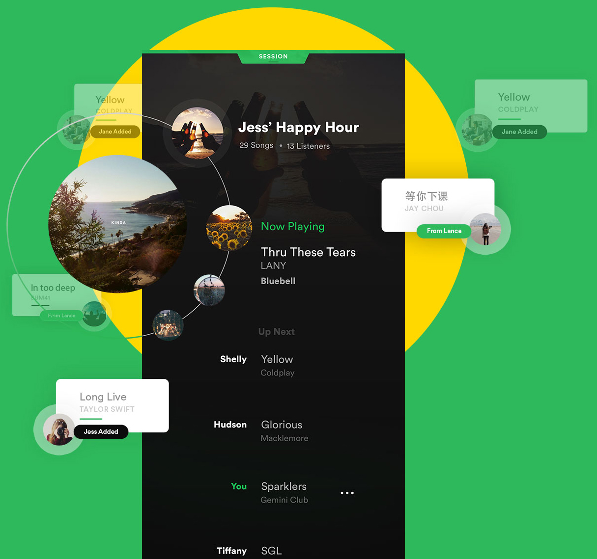

There is something about listening to music, or playing it with other people, that brings its own social buzz, making you feel connected to those around you.
In many social settings such as house/dinner parties or road trips there is always music. Have you ever been with friends and one person is streaming from their personal playlist but you want to request a song?
I found myself in many of these scenarios and whenever someone wants to request song, they have to constantly ask the person to find the song, and play it. This process is long and tedious. The users have to approach the person, or even pass the phone around, make a request, unlock the device and finally queue the song.
What if we users can just do it themselves?
Finally everyone can listen to the songs they want
Feature concept build on top of Spotify
